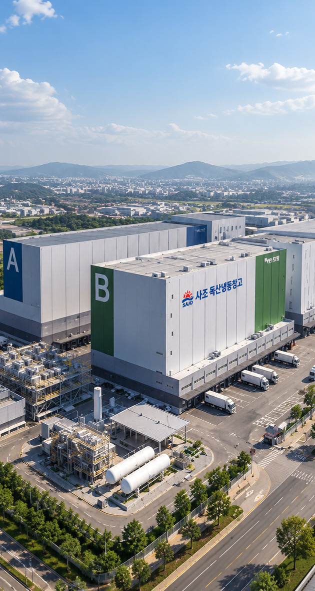
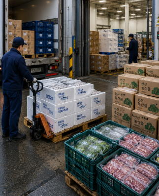
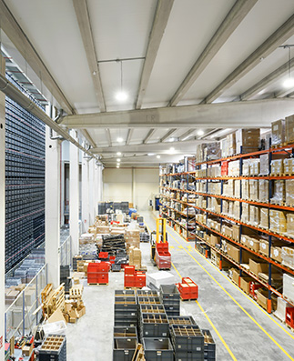
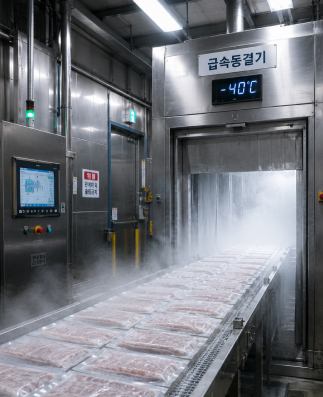
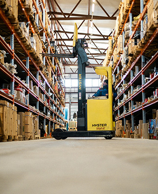

사업영역
사업영역
HOME > 사업영역 > 유통사업
DISTRIBUTION BUSINESS유통사업
신선하고 깨끗한 것을 드리고 싶은 마음
신선함을 잇는 유통의 힘으로
더 좋은 가치를 전달합니다
DISTRIBUTION BUSINESS
제조에서 물류·유통까지
이어지는 식품 경쟁력
- #가공식품 제조
- #DPS 물류체계
- #저온 물류
- #HACCP
- 사조대림은 대림선 브랜드의 어묵, 맛살 및 햄, 소시지 등의
가공식품을 제조, 물류 및 유통하고 있습니다. - 특히 제조부문에서는 최근 웰빙트렌드 확산에 따라 건강지향성 고급화 제품생산을 강화하여 소비자의 니즈를 충족시키고자 노력하고 있으며 시장확대의 일로에 있는 육가공사업의 활성화를 통해 신수종 사업의 성공적 정착을 이끌어가고 있습니다.
BUSINESS NETWORK 생산과 물류를 연결하는 유통 인프라
안산·부산 생산거점의 품질관리 역량과 독산냉동창고의 저온 보관 인프라를 기반으로 제조에서 보관·유통까지 연결합니다.
-
01. ANSAN
- 안산공장
- 대림선 어묵, 크라비아 등 어육 연제품 생산. 크린룸 위생설비와 DPS 물류체계를 활용합니다.
-
02. BUSAN
- 부산공장
- 내수시장을 겨냥한 햄·소시지류를 생산하며 HACCP 적용작업장과 무균실을 운영합니다.
-
03. DOKSAN
- 독산냉동창고
- 초저온실과 보세장치장 시설을 갖추고 냉동 농수축산물 보관 및 급속 동결을 수행합니다.
LOGISTICS SITE 물류사업

DOKSAN COLD STORAGE 독산냉동창고
도심 접근성과 저온 인프라를 갖춘 물류 거점저희 독산 냉동 창고는 고속도로와 남부순환도로를 끼고 있어 편리한 교통과 도심에 위치한 높은 접근성을 가지고 있습니다.
또한, 초저온실과 보세장치장 시설을 갖추고 있어 선도를 생명으로 하는 수산물 및 축산물, 수입물품 등의 보관에 적합합니다.
- 주소
- 서울 금천구 두산로7길 13
- 부지 및 연면적 (단위 : m²)
-
구분 부지 연면적 용도별구분 공장 사무실 후생시설 독산냉동창고 3,855 10,355 9,914 441 -
- 생산품목
- 냉동 농수축산물 보관 급속 동결 (10 M/T)
COLD CHAIN SYSTEM 선도를 지키는 저온 물류 흐름
초저온실과 보세장치장 시설, 전산화 시스템을 기반으로
보관 품질과 재고관리 효율을 높입니다.
-

01. INBOUND
- 입고
- 농수축산물 및 수입물품
-

02. STORAGE
- 저온 보관
- 초저온실·보세장치장 시설
-

03. FREEZING
- 급속 동결
- 급속 동결 10 M/T
-

04. INVENTORY
- 재고관리
- 전산화 시스템 기반 관리